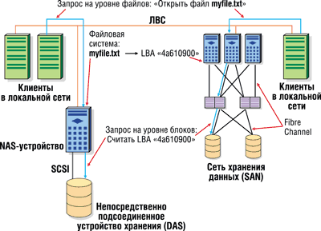
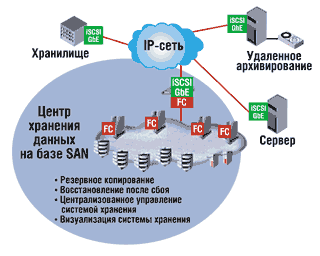
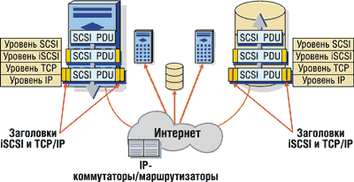
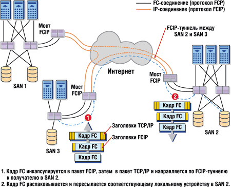
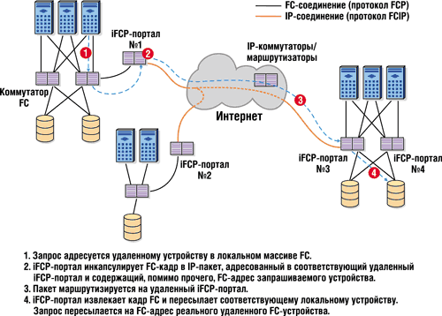
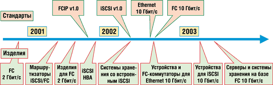

Андрей Борзенко
В последние годы гигантский рост потоков информации и масштабов систем хранения данных, обусловленный появлением нового класса приложений, работающих с корпоративными данными и Интернетом, привел к резкому увеличению потребностей в системах хранения данных. При этом особенно быстро растут требования к сетевому хранению данных. По оценкам IDC, в 2001-2003 гг. объем хранилищ данных будет увеличиваться со скоростью примерно 75% в год.
Такой рост подчеркивает две очень важные проблемы: повышение важности данных и сложности управления растущим объемом информации. Для решения этих проблем все чаще применяются сетевые хранилища в виде сетей хранения данных (Storage Area Network, SAN), обеспечивающих хранение и защиту критически важной информации, а также доступ к ней и возможность управления. В соответствии с прогнозами IDC в 2004 г. на долю подобных сетевых хранилищ придется 67% всей хранимой информации.
Традиционный подход к корпоративным хранилищам данных заключается в непосредственном подключении серверов к локальной системе хранения. Системам хранения с непосредственным соединением (Direct Attached Storage, DAS) и построенным на их основе отдельным хранилищам свойственна ограниченная масштабируемость, сложность управления и повышенная опасность возникновения узких мест на серверах и в локальных сетях. Стандартная SAN защищает данные, обеспечивая резервные пути между клиентами и устройством хранения, а также удаленное зеркалирование на случай сбоев и резервное копирование, не снижающее производительность работы серверов приложений и базовой сети. Такие сетевые хранилища обеспечивают защиту от сбоев не только отдельных устройств, но и целых участков сети, а также облегчают операции архивирования данных. Кроме того, в системах сетевого хранения информации можно консолидировать хранилища, упростив таким образом управление ими. Централизованное управление объединенным пулом хранилищ зачастую более эффективно, чем отдельными напрямую подключенными подсистемами хранения. По мере необходимости можно легко выделять место в объединенном пуле, что упрощает администрирование и позволяет оптимизировать хранение данных.
Хотя существует много вариантов реализации сетей хранения данных, все их объединяют несколько общих свойств, благодаря которым SAN существенно отличается от модели хранения с непосредственным соединением с сервером. Базовое преимущество сетевой модели хранения - это максимальная производительность и эффективность использования ресурсов путем их объединения и централизованного управления данными и ресурсами хранения. SAN обеспечивает доступ к массивам хранения класса предприятия многим серверам, которые в совокупности полностью используют возможности этих хранилищ. Кроме того, благодаря доступу через сеть хранения можно полностью задействовать возможности большого массива, избегая снижения производительности при масштабировании. В отличие от описанной схемы, хранилища класса предприятия, использующие традиционную модель, подключаются к мощным серверам, но недостаточно эффективно используют крупные массивы данных.
SAN находят все более широкое применение в открытых гетерогенных средах, построенных на базе различных операционных систем и ориентированных на обеспечение высокой производительности и масштабируемости. В результате все важнее становится упростить управление SAN-сетями.
Этап Fibre Channel
Первые сети хранения информации появились примерно три-четыре года назад. В те времена особое внимание уделялось перспективной шинной технологии Fibre Channel, обещавшей стать отличным транспортом для сетей хранения. Она позволяла передавать пакеты большего размера и на большее расстояние, чем стандартная архитектура шины SCSI.
Стандарт Fibre Channel обладает характеристиками архитектуры канала, при этом многие операции протокола (в частности, операции управления потоками данных, сегментация и повторная сборка пакетов, обработка ошибок) выполняются на уровне аппаратных средств. Поддержка доступа к данным на уровне блоков обеспечивает высокопроизводительную передачу больших объемов данных при минимальной нагрузке на сервер. В Fibre Channel также применяется высокоэффективный интерфейс устройств хранения с операционной системой, позволяющий использовать адаптеры основной, или ведущей, шины (Host Bus Adapter, HBA) для обработки ввода-вывода. Благодаря этому данная технология обеспечивает чрезвычайно малое время задержки и высокую реальную пропускную способность, разгружает процессоры на сервере и избавляет от потребности в сложных программных протоколах для предотвращения "заторов" трафика в сети и управления другими операциями. При работе с устройствами хранения доступ к ним обеспечивается на уровне блоков.
Неудивительно поэтому, что технология Fibre Channel стала для SAN стандартом де-факто. Она широко применяется в сетях хранения, работающих на скоростях передачи данных 1 и 2 Гбит/с. При поддержке полнодуплексной передачи на скорости 2 Гбит/с Fibre Channel теоретически способна поддержать на отдельном соединении полосу пропускания шириной до 200 Мбит/с. По опубликованным данным, фактически измеренная пропускная способность подобных систем достигала 195 Мбит/с, при этом нагрузка на центральный процессор не превышала 10%.
Однако Fibre Channel так и не смогла полностью оправдать возлагавшиеся на нее надежды. Она стала жертвой борьбы между претендентами на стандарт: разработчикам не удалось добиться совместимости создаваемых систем, что часто тормозило развертывание сетей хранения информации. К тому же на этот период пришлось бурное развитие технологии Gigabit Ethernet. Компании не слишком торопились модернизировать уже развернутые инфраструктуры ради перехода на волоконно-оптические каналы связи. Сказался и взрывоподобный рост популярности Интернета, в результате которого крупным корпорациям пришлось решать задачу управления огромными объемами данных не только на серверах своего предприятия, но и на распределенных узлах, географически разнесенных на большие расстояния.
Снова IP
Тогда, видимо, и возникла идея управлять устройствами хранения с помощью проверенного временем протокола IP. Он должен обеспечить управляемость и совместимость сетей хранения при невысокой стоимости управления.
Как известно, IP - это основной сетевой протокол общего назначения. Благодаря повсеместному распространению в мире и способности работать практически в любых подсетях, протокол IP приобрел вес, дающий ему множество преимуществ по сравнению с другими сетевыми протоколами. IP стал стандартом корпоративных сетей; существуют поддерживающие IP магистральные линии, охватывающие весь земной шар. Немаловажно и наличие огромной армии технических специалистов с опытом работы с данным протоколом. Такая вездесущность обусловливает огромную и постоянно растущую поддержку IP-сетей производителями и разработчиками - широко распространены механизмы обеспечения качества обслуживания (Quality of Service, QoS), распределения приоритетов подключений и протоколы безопасности, доступные в IP-сетях. Данный протокол относительно недорог, ведь он базируется на стандартных, общепринятых технологиях создания подсетей, таких, как Ethernet.
Появление технологии IP Storage было логическим следствием возросших требований к сетевым хранилищам данных и повсеместного распространения протокола IP в качестве основного сетевого протокола общего назначения. На рынке уже появились первые реализации этой технологии, которые стандартизируются ассоциацией IETF (Internet Engineering Task Force). Известно, что на заре развития IP умами владела идея "IP поверх всего" - Ethernet, Token Ring, ATM и т. д. Теперь же, когда по IP-сетям передают видео, речевую информацию, а также данные на уровне блоков, приоритеты, кажется, поменялись, и сейчас говорят о подходе "все поверх IP".
Благодаря уже существующей инфраструктуре локальных и глобальных сетей, а также соответствующей огромной базе знаний, перспективы использования протокола IP для сетевого хранения данных выглядят чрезвычайно привлекательно. При использовании единой сетевой технологии - как для локальных сетей, так и для SAN - отделы ИТ смогут избежать дублирования затрат и ресурсов: им не придется обслуживать и поддерживать оборудование, технический персонал и базу знаний одновременно для IP и Fibre Channel. Кроме того, небольшим компаниям, желающим воспользоваться преимуществами сетевого хранения, проще реализовать SAN на основе IP, а не Fibre Channel, хотя бы потому, что с IP они уже знакомы.
Поддержка хранения с доступом на уровне блоков по стандартным IP-сетям также позволит реализовать доступ к хранилищам на больших расстояниях. К тому же оптимизма в отношении спецификации Fibre Channel сейчас поубавилось, чему в немалой степени способствовала поддержка альтернативных технологий компаниями EMC и IBM, а также не столь крупными производителями, ставшими под знамена этих лидеров.
С другой стороны, возвращение аппаратных хранилищ в основную телекоммуникационную сеть выглядит весьма парадоксальным решением и даже противоречит самой концепции сети устройств хранения информации. Ведь такие сети создаются как раз для того, чтобы операции хранения данных, требующие огромной пропускной способности, не препятствовали обмену сообщениями и передаче другого трафика. И в самом деле, перевод устройств хранения в IP-сети ставит перед фирмами-производителями целый ряд технических проблем и вопросов стандартизации. Без их решения разработчикам едва ли удастся превратить сети хранения, строящиеся поверх IP, в универсальное средство подключения к сетям хранения, привлекательное для пользователей.
Одно из основных требований для обеспечения пересылки данных по IP-сетям - повысить надежность и эффективность самого протокола, чтобы он был в состоянии справиться со сложной задачей хранения данных.
Концепция IP Storage
Вообще говоря, IP Storage - это совокупность технологий, которые обеспечивают доступ на уровне блоков к пересылаемым по IP-сетям данным систем хранения. В данной концепции ключевые фразы - это "использование IP-сетей" и "доступ к системам хранения на уровне блоков". Впрочем, передача данных по сети на уровне блоков - совсем не новая идея. Этот подход в современных SAN-сетях используется, например, в рамках той же технологии Fibre Channel. Основное потенциальное преимущество IP Storage - расширенная совместимость и обеспечение взаимодействия различных сетей, а также создание SAN-сетей на базе единого стандарта и технологий, поддерживающих IP, например Ethernet.
Использование IP для пересылки данных также не ново. На протяжении многих лет для доступа к хранимым данным на уровне файлов применялись такие протоколы, как CIFS (Common Internet File System) и NFS (Network File System). Различие между этими протоколами и протоколами IP Storage заключается в способе доступа к данным, который осуществляется на уровне файлов или блоков.
CIFS и NFS поддерживают запросы на уровне файлов данных на сервере, который "владеет" файловой системой. Такие запросы предполагают наличие сетевого объекта, например, обычного файлового сервера или сетевого устройства хранения - файлера (Network Attached Storage, NAS). Он поддерживает файловую систему и предоставляет свои файлы другим узлам сети. Получив запрос (например, на открытие файла myfile.txt), файловый сервер или NAS-устройство (рис. 1) обращается к своим таблицам размещения файлов, преобразует логическое имя файла в перечень адресов физических блоков, соответствующих расположению данных на физическом носителе, и выполняет физический доступ на уровне блоков. Эти процедуры требуют процессорного времени сервера и из-за этого иногда существенно увеличивают время отклика при выполнении файловых операций.
|  | Рис. 1. Доступ к данным на уровне файлов и блоков.
|
В базах данных, которые полагаются на быстрый (с минимальной задержкой выполнения транзакций) доступ к информации, подобные дополнительные операции недопустимы, поскольку в этом случае требуется прямой доступ на уровне блоков к физическим устройствам хранения. Такой тип запросов к устройствам хранения на уровне блоков данных и поддерживают SAN-сети. В свою очередь, протоколы IP Storage предоставляют средства инкапсуляции запросов на уровне блоков в IP-пакеты для пересылки их по стандартным сетям, поддерживающим другой известный протокол, TCP. Таким образом, обеспечивается поддержка SAN-запросов на уровне блоков в обычных IP-сетях.
В настоящее время наиболее перспективными считаются три протокола инкапсуляции для IP Storage:
- iSCSI
- FC поверх TCP/IP (FCIP)
- Internet FC Protocol (iFCP)
iSCSI
Протокол SCSI - сегодня основной метод обеспечения доступа к данным на уровне блоков между серверами. Более 100 миллионов SCSI-устройств непосредственно подключаются к индивидуальным системам, но при этом не позволяют другим удаленным компьютерам получить доступ к хранимым данным. Технология Fibre Channel дополняет возможности SCSI, повышая производительность и обеспечивая доступ к данным на уровне блоков между системами в локальной сети хранения.
Потребность рынка в средствах доступа к данным на уровне блоков, причем на больших расстояниях и с использованием общедоступных сетевых технологий, обусловила появление iSCSI - стандартного протокола доступа к данным на уровне блоков по действующим IP-сетям. В iSCSI предусматривается инкапсулирование SCSI-команд в TCP-пакеты, которые затем пересылаются стандартными средствами протокола IP. Благодаря iSCSI стираются физические границы сетей хранения, так как данные становятся доступными из любого места сети.
Напомним, что по IP-протоколу пакеты доставляются получателю не в строгой последовательности, их исходный порядок восстанавливается в точке получения. Спецификация SCSI, напротив, требует, чтобы пакеты следовали строго один за другим без задержек. Достаточно хотя бы одному пакету выбиться из общей последовательности - и все переданные данные будут испорчены или нарушится подключение. Задержка пакетов в технологии iSCSI компенсируется за счет того, что данные размещаются в памяти без учета их последовательности. Правда, новая спецификация требует увеличения размеров заголовка каждого пакета. Включенная в него дополнительная информация значительно ускоряет сборку пакетов на уровне ТСР, снижая тем самым запаздывание данных.
Протокол iSCSI обеспечивает доступ на уровне блоков через стандартные сети на основе Ethernet/IP независимо от того, где эти данные располагаются - на непосредственно подключенном SCSI-устройстве или в SAN на базе Fibre Channel. iSCSI предоставляет предприятиям и поставщикам услуг хранения (Storage Service Provider, SSP) возможность создавать глобальные сети хранения и централизованно управлять ими, используя существующую инфраструктуру IP-сетей. При использовании iSCSI обеспечивается передача данных в интрасети и доступ к системам хранения на больших расстояниях.
Данные и команды SCSI по IP-сетям пересылаются следующим образом. Когда приложение или пользователь инициирует запрос данных, файла или приложения, операционная система генерирует SCSI-команды и запрос данных. После этого команда и запрос инкапсулируются и к ним добавляется заголовок пакета. Пакеты пересылаются через Ethernet-соединение. На принимающей стороне пакет разбирается, расшифровывается (если он был зашифрован), из него выделяются команды и данные SCSI. Далее команды и данные SCSI направляются на SCSI-устройство хранения данных. В таком же порядке средства протокола iSCSI возвращают запрошенные данные.
Концепцию iSCSI можно расширить для создания виртуальной сети хранения средствами любого сетевого устройства. iSCSI взаимодействует с операционной системой через интерфейс устройств хранения, позволяя перенести операции ввода/вывода на ведущую шину и разгрузить таким образом центральный процессор на сервере. На рис. 2 показана схема размещения и транспортировки блоков данных SCSI в пакетах TCP/IP, а на рис. 3 - использование iSCSI-устройств в системах сетевого хранения данных на базе IP.
 |
| Рис. 2. Схема размещения данных в пакетах iSCSI.
|
|  | Рис. 3. Использование iSCSI.
|
Итак, новый протокол призван выполнять преобразования, необходимые для того, чтобы использовать IP в качестве транспорта команд SCSI (для передачи которых в настоящее время применяется Fibre Channel). С помощью iSCSI осуществляется сквозная связь между хранилищем и клиентами; подобно Fibre Channel, этот протокол обеспечивает в архитектуре SAN взаимодействие через коммутаторы клиентских компьютеров и массивов хранения данных (в этом случае - поддерживающих iSCSI).
На рис. 4 показана упрощенная схема уровней протоколов iSCSI. Сервер в левой части рисунка содержит iSCSI-устройство - iSCSI-адаптер основной шины HBA или специальную программу, работающую на узле, оборудованном стандартными сетевыми адаптерами Ethernet. Команды SCSI инкапсулируются в блоки iSCSI PDU (Protocol Data Unit). В соответствии со стандартами IETF в протоколе iSCSI в качестве транспортного уровня используется TCP для обеспечения надежной доставки с сохранением последовательности пакетов.
|  | Рис. 4. Уровни протокола iSCSI.
|
После добавления заголовка TCP/IP пакеты с командами SCSI обрабатываются как обычные IP-пакеты и перенаправляются получателю (на основании его IP-адреса) средствами обычной инфраструктуры IP. Приняв пакет, получатель последовательно удаляет уровни, пока не "доберется" до команды SCSI-интерфейса. Таким образом, источник и получатель взаимодействуют так, как если бы они находились в одной локальной системе.
Что касается адаптеров основной шины HBA, то они использовались на протяжении многих лет для соединения серверов и систем хранения, поскольку способны существенно разгрузить центральный процессор, самостоятельно обслуживая операции ввода-вывода. Такие адаптеры применяются в средах с самыми разнообразными интерфейсами систем хранения - SCSI, Fibre Channel и т. п. Сетевые интерфейсные платы, которые обычно обеспечивают доступ к IP-сетям, в отличие от HBA не поддерживают операции низкоуровневых протоколов и не разгружают сервер от операций ввода-вывода в высокопроизводительных системах хранения данных.
В iSCSI используются преимущества глобальной адресации протокола IP. Устройства iSCSI обладают идентификаторами двух типов: iSCSI-имя и iSCSI-адрес. Все источники и получатели iSCSI получают постоянное имя iSCSI, аналогично тому, как в Fibre Channel они получают глобальное имя (WorldWide Name, WWN). iSCSI-имя указывает на конкретное устройство независимо от его местоположения или IP-адреса. Адрес iSCSI указывает на местоположение источника или получателя iSCSI и состоит из IP-адреса, номера порта и имени iSCSI-устройства. Вот пример.
Формат адреса iSCSI: iSCSI://<имя_домена>:<номер_порта>/<имя_iSCSI> Имя iSCSI: fqn.com.diskvendor.diskarray.45678 Адрес iSCSI: iSCSI://diskfarm1.acme.com:80/fqn.com.diskvendor.diskarray.45678
Компания IBM (http://www.ibm.com) стала первым крупным производителем, предложившим рынку устройства с интерфейсом iSCSI. По мнению специалистов корпорации, технология iSCSI уже достаточно проработана и вполне готова к эффективному применению. В течение ближайших двух -- пяти лет у нее есть все шансы получить самое широкое распространение, точно так же, как это произошло с сетями хранения. Так, дисковые массивы TotalStorage IP 100i и 200i поддерживают открытые сети SAN, а подключение пользователей к сетям хранения и базам данных должно выполняться при помощи технологии iSCSI. В частности, модель TotalStorage IP Storage 200i рассчитана на системы хранения информации нижнего звена. Она базируется на двух процессорах и оснащена 1 Гбайт памяти (в максимальной конфигурации ее объем может быть удвоен). Количество дисков (с возможностями RAID 5) составляет от 6 до 48. Первоначально новинка должна пересылать данные со скоростью до 1 Гбит/с, однако позже, когда скорость обмена по сетям Ethernet возрастет до 10 Гбит/с, пропускная способность дискового массива IBM увеличится до этого значения. Максимальная емкость нового устройства, предназначенного для рабочих групп и корпоративных подразделений, составляет от 216 Гбайт до 1,7 Тбайт. В качестве ПО поставляются ОС Linux и загружаемые клиентские модули iClients для Windows NT, Windows 2000 и Linux.
FCIP
Как следует из самого названия протокола (Fibre Channel поверх TCP/IP), его цель - передача кадров Fibre Channel через инфраструктуру IP. Данный протокол позволяет объединить "островки" SAN-сетей на базе Fibre Channel посредством IP-сетей и создания единого массива таких SAN. В таких расширенных массивах SAN сохраняется FC-адресация - по существу, речь идет о создании IP-туннелей между отдельными конечными точками FCIP. После установки туннелей FC-устройства рассматривают такие расширенные связи как обычные FC-соединения и применяют привычную адресацию. В стандартной реализации конечные точки FCIP будут применяться для создания соединений между двумя (или более) FC-коммутаторами, или межкоммутаторными соединениями (InterSwitch Link, ISL), в стандартной инфраструктуре IP. В результате удастся объединить два (или более) массива SAN в единую структуру.
На рис. 5 показано объединение трех "островков" SAN, подключенных к конечным точкам FCIP (или шлюзам), и создание единого массива SAN-сетей на базе Fibre Channel. FCIP-шлюзы инкапсулируют FC-кадры, после чего в качестве основного транспорта используется протокол TCP (вообще говоря, существуют реализации, основанные на протоколе UDP, однако в спецификации IETF предусмотрено применение только TCP). Пакет с внедренными FC-кадрами пересылается получателю через инфраструктуру IP как обычный IP-пакет.
|  |
| Рис. 5. Пример работы протокола FCIP.
|
После создания FCIP-туннелей связь между FC-устройствами выполняется "прозрачно", т. е. все промежуточные преобразования для них незаметны. FC-коммутаторы рассматривают соединения как стандартные ISL-подключения и поэтому поддерживает обмен информацией с серверами имен, создавая единое пространство FC-имен.
FCIP базируется на многих уже существующих особенностях Fibre Channel, и вполне вероятно, что устройства с поддержкой этого протокола составят основную конкуренцию изделиям на основе iSCSI.
iFCP
Последний протокол IP Storage - это нечто среднее между двумя ранее рассмотренными протоколами. Так же, как и FCIP, протокол iFCP инкапсулирует FC-кадры, пересылаемые через инфраструктуру IP. Поэтому в документах IETF определен общий формат инкапсулированных FC-кадров. Основное различие между ними - в схеме адресации. Протокол FCIP устанавливает туннели по схеме "точка - точка", которые используются для объединения (поверх Ethernet) двух SAN на базе FC и создания единой, большей SAN. Между тем iFCP - это протокол, поддерживающий соединения шлюзов (т. е. действующий по схеме "шлюз - шлюз"), в нем совмещены схемы адресации Fibre Channel и IP, что позволяет перенаправлять FC-кадры соответствующим получателям. В отличие от FCIP, протокол iFCP в текущей версии использует схему адресации, позволяющую для каждой подключенной SAN сохранить собственное пространство имен.
На рис. 6 показаны три удаленные SAN-сети, соединенные через инфраструктуру IP посредством конечных точек (или порталов) iFCP. Каждый iFCP-портал представляет все устройства в своем локальном пространстве имен FC другим iFCP-порталам, подключенным к IP-сети. Каждый портал поддерживает таблицу удаленных устройств и представляет их как устройства локального пространства имен FC. Этот процесс прозрачен для реальных устройств локальной SAN, при этом удаленные устройства выглядят как локальные. При необходимости обратиться к удаленному устройству локальное устройство направляет FC-кадр по локальному FC-адресу удаленного устройства. Этот кадр поступает на локальный iFCP-портал, который помещает его в IP-пакет и перенаправляет соответствующему удаленному iFCP-порталу. Последний, в свою очередь, извлекает FC-кадр и пересылает устройству-получателю. Поскольку порталы должны понимать оба вида адресации - и Fibre Channel, и IP, - большинство реализаций будет также выполнять функции стандартных коммутаторов этих протоколов.
|  |
| Рис. 6. Пример работы протокола iFCP.
|
Проблемы IP Storage
IP Storage - очень молодая технология, и до начала ее широкого распространения необходимо решить с помощью стандартизации ряд связанных с нею проблем. Поскольку протокол IP не гарантирует доставку, в качестве основного транспортного протокола во всех трех протоколах IP Storage используется TCP, который гарантирует доставку с сохранением порядка пакетов при пересылке на большие расстояния в перегруженных IP-сетях. Это означает, что даже при нарушении порядка следования IP-пакетов уровень TCP предоставит протоколу более высокого уровня (в данном случае это SCSI) данные в правильном порядке. Для этого в TCP обычно применяется буфер восстановления последовательности пакетов. В нем хранятся пакеты, полученные с нарушением порядка следования. После получения всех пакетов последовательности TCP передает данные следующему уровню.
Этот процесс иногда оказывается сложным, и на его обслуживание тратится процессорное время, что может создавать задержки при выполнении операций. В результате ввод-вывод потребует больше дополнительных операций, чем обычная передача блоков в Fibre Channel или SCSI. Для решения этой проблемы требуется предусмотреть механизм разгрузки процессора от этой работы - TOE (TCP Offload Engine).
Рассматриваемые протоколы работают на основе IP, однако это не значит, что использование имеющихся в продаже стандартных сетевых адаптеров Ethernet - оптимальный выбор. С технической точки зрения использовать их вполне возможно, но стандартные адаптеры непригодны в ситуациях, в которых требуется обеспечить высокую производительность. Как говорилось выше, для разгрузки серверов от операций ввода-вывода в IP Storage необходим механизм TOE. Использование ранних реализаций TOE-устройств повысит стоимость оборудования и усложнит стандартные сетевые адаптеры. Широкое распространение технологий IP Storage зависит от того, будет ли соотношение цена/производительность этих усовершенствованных адаптеров основной шины сопоставимо с аналогичными показателями существующих технологий, например Fibre Channel.
Ранее SAN размещались в защищенных центрах хранения данных. Сегодня, когда устройства хранения могут физически располагаться где угодно, связываясь через стандартную инфраструктуру IP, вопрос безопасности выходит на первый план. Отрасль опять стоит перед старым, как мир, вопросом: каков приемлемый уровень безопасности и каковы приемлемые расходы на ее обеспечение.
Тот факт, что технологии основаны на IP, совсем не гарантирует, что они обеспечат совместимость, характерную для Интернета. Для успеха IP Storage необходимо также, чтобы фирмы-производители прилагали совместные усилия, добиваясь совместимости своих изделий.
Возможные перспективы
В настоящее время, когда SAN уже довольно широко используются, существует потребность обеспечить связь между географически разделенными сетями хранения данных. Технологии IP Storage здесь как нельзя кстати. По мнению многих экспертов, они позволяют обеспечить совместный доступ к данным между различными Web-узлами большой корпорации, создать удаленное "зеркало" жизненно важных данных и т. п. Основа всех подобных решений - организация мостов/маршрутизаторов между Fibre Channel и IP для создания поверх IP-инфраструктуры SAN-соединений, связывающих между собой SAN-сети. По мнению ряда экспертов, для этой цели больше всего подходят протоколы FCIP и iFCP, тесно связанные с FCP, однако и iSCSI-устройства обладают неплохими возможностями.
Новая технология в принципе позволяет обеспечить ограниченную связь по IP между несколькими SAN. Возможно, что появятся решения, в которых iSCSI-платы интегрированы с NAS-устройствами: ведь новые технологии и необходимые TOE-устройства дополняют решения на базе NAS. Таким образом, будет создан единый многофункциональный комплекс, обеспечивающий доступ к данным как на уровне блоков, так и на уровне файлов. Это комплексное NAS-устройство с поддержкой доступа на обоих уровнях облегчило бы переход на сетевое хранение в системах с непосредственным подключением хранилищ.
SAN-сети на основе IP, ориентированные на рабочие группы и небольшие компании, могли бы внедряться в средах, где необходимо сетевое хранение данных, но развертывание новой сетевой технологии проблематично. В такой среде лучше всего использовать iSCSI. Есть основания полагать, что SAN-сети, основанные на iSCSI, не заменят SAN на базе Fibre Channel, а будут устанавливаться "с нуля" и станут сравнительно недорогим способом достижения преимуществ сетевого хранения данных.
Прогноз развития технологий представлен на рис. 7. Со временем, когда будут устранены препятствия на пути внедрения IP Storage, могут появиться полноценные глобальные SAN-сети со сквозными соединениями на основе IP. Среди рассмотренных трех технологий IP Storage протокол iSCSI лучше всего подходит для создания таких структур. SAN на основе IP будут включать iSCSI-адаптеры ведущей шины, которые избавят TCP от большинства дополнительных операций, и устройства хранения со встроенной поддержкой iSCSI, взаимодействующие на основе стандартной инфраструктуры IP. В дальнейшем многие из дополнительных функций IP, ранее используемых только в локальных сетях (агрегирование полосы пропускания, обеспечение гарантированного качества обслуживания и другие), станут применяться в SAN-сетях. Использование IP в качестве основного транспорта SAN позволяет создать самые разнообразные распределенные конфигурации. Например, можно связать несколько SAN-сетей для создания отказоустойчивой конфигурации или для совместного использования ресурсов, обеспечить доступ серверов к объединенным пулам данных в удаленных SAN-сетях (рис. 8).
|  |
| Рис. 7. Развитие технологий систем сетевого хранения данных.
|
В дальнейшем будут появляться более быстрые соединения для ввода-вывода и эффективного использования процессоров на серверах. Кроме того, поддержка сетей в системах хранения данных может быть усовершенствована за счет оптимизации процедур управления сетями хранения, планирования мощностей хранения, повышения безопасности, QoS и производительности. Какая бы спецификация IP ни победила в развернувшейся борьбе, можно с уверенностью сказать, что Fibre Channel перестает быть синонимом систем распределенного хранения информации. Применение IP открывает перед компаниями широкий спектр возможностей, позволяя задействовать в этих целях самые разнообразные сетевые транспорты и линии связи. Все прогнозы показывают, что технология IP Storage будет играть ключевую роль в хранении данных.